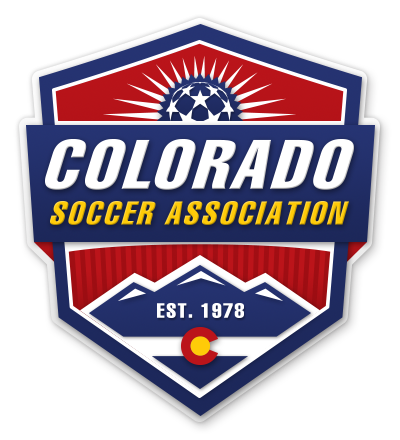
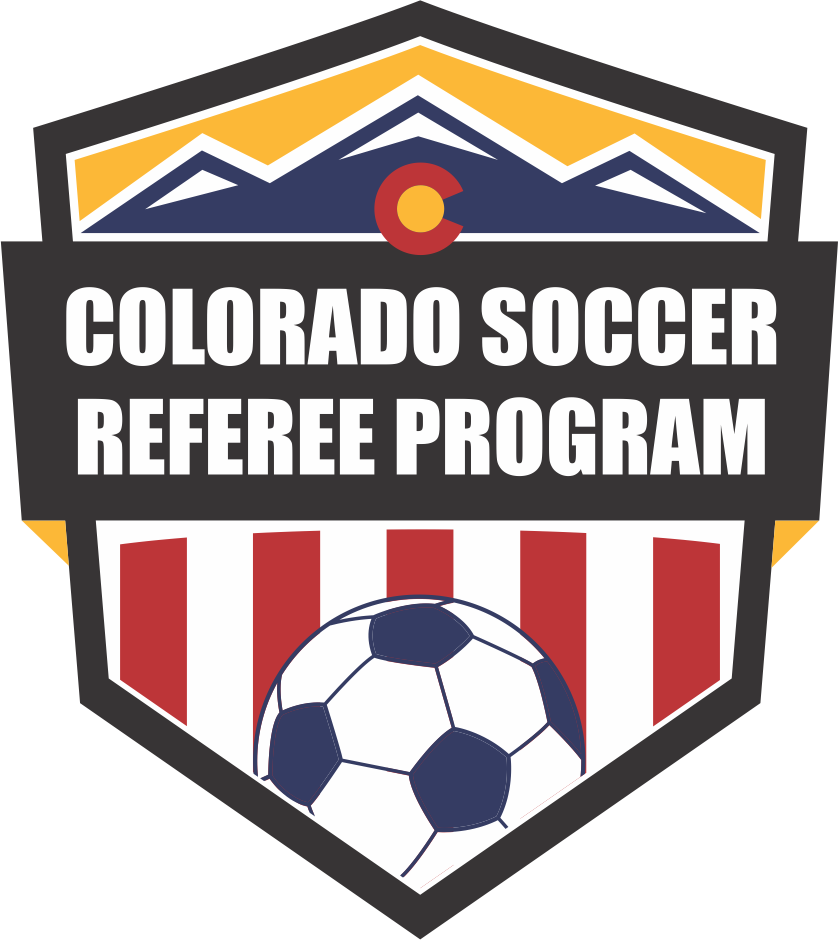

·
The referee respect, education, and recruitment program built by CSA for every Colorado club. Choose your role to begin.
This app is built for three audiences. Pick the role you're showing up in right now. You can switch anytime.
U.S. Soccer Policy 531-9 protects every referee at every sanctioned match in Colorado. If you witness or experience abuse on the field, report it.
If a referee with a green badge is involved (under 18), penalties are increased. Coaches, players, parents, and spectators all fall under this policy.